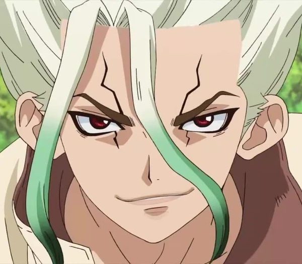
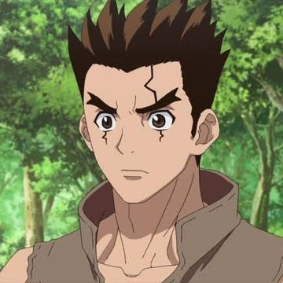

Dr Stone

Synopsis
After five years of harboring unspoken feelings, high-schooler Taiju Ooki is finally ready to confess his love to Yuzuriha Ogawa.
Just when Taiju begins his confession however, a blinding green light strikes the Earth and petrifies mankind around the
world— turning every single human into stone.
Several millennia later, Taiju awakens to find the modern world completely nonexistent, as nature has flourished in the years humanity stood still.
Among a stone world of statues, Taiju encounters one other living human: his science-loving friend Senkuu, who has been active for a few months.
Source: (anilist.co)
Characters
| Name | Description | Position on the show |
|---|---|---|
| Senku  |
Senku is a genius with a vast amount of scientific knowledge. He is able to invent various kinds of tools and gadgets in a short amount of time with ease. | Main Character |
| Taiju  |
Taiju is an outgoing, friendly, and kind person. He's enthusiastic about performing even small tasks and a diligent worker. He is very determined when something is important to him. He tends to yell loudly and is enthusiastic regardless of the task so long as he proves useful. | Main Character |
Trailer
More Information
More Information about the show can be found on the anime tracking site Anilist.co (Dr Stone)